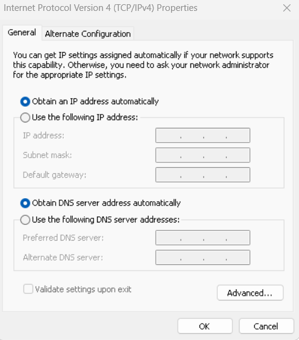

DHCP Server
Konsep Dasar DHCP Server
1.1. Apa Itu DHCP?
DHCP (Dynamic Host Configuration Protocol) adalah protokol jaringan yang memungkinkan DHCP Server untuk secara otomatis memberikan konfigurasi jaringan (seperti alamat IP, subnet mask, gateway default, dan DNS server) kepada perangkat DHCP Client dalam sebuah jaringan. Pemberian konfigurasi ini bersifat "Dinamis" karena dilakukan secara otomatis dan fleksibel, tidak manual.
1.2. Mengapa DHCP Begitu Penting?
Implementasi DHCP server adalah fondasi bagi jaringan modern yang efisien dan skalabel. Berikut adalah alasannya:
- Efisiensi dan Penghematan Waktu:
- Automasi: Menghilangkan kebutuhan konfigurasi manual pada setiap perangkat, sangat efisien untuk jaringan besar.
- Penyebaran Cepat: Perangkat baru dapat langsung terhubung dan mendapatkan konfigurasi dalam hitungan detik.
- Mengurangi Kesalahan Konfigurasi:
- Meminimalkan Konflik IP: Secara otomatis memastikan setiap klien mendapatkan alamat IP unik, menghindari konflik IP.
- Konsistensi Konfigurasi: Semua klien mendapatkan konfigurasi yang seragam dari satu sumber terpusat.
- Manajemen Alamat IP yang Fleksibel:
- Re-use IP: Alamat IP yang tidak terpakai dapat dikembalikan ke pool dan didistribusikan kembali, memaksimalkan penggunaan alamat IP terbatas.
- Perubahan Konfigurasi Mudah: Perubahan konfigurasi (misalnya gateway atau DNS) cukup dilakukan di DHCP server dan akan disebarkan ke semua klien saat mereka memperbarui lease.
- Mendukung Skalabilitas: Sangat penting untuk jaringan besar yang sering mengalami penambahan atau pengurangan perangkat.
- Mobilitas Perangkat: Perangkat bergerak dapat mulus berpindah antar jaringan tanpa konfigurasi manual.
1.3. Komponen Utama DHCP
Untuk memahami cara kerja DHCP, penting untuk mengetahui komponen-komponen dasarnya:
- DHCP Server: Komputer atau perangkat jaringan yang menjalankan layanan DHCP. Ia memiliki database alamat IP yang tersedia dan bertanggung jawab untuk mendistribusikannya.
- DHCP Client: Perangkat yang meminta dan menerima konfigurasi jaringan dari DHCP server (contoh: komputer, laptop, smartphone, printer jaringan, IP Camera).
- IP Pool / Scope: Rentang alamat IP yang telah ditentukan oleh administrator untuk didistribusikan secara otomatis kepada klien (misalnya, 192.168.1.100 hingga 192.168.1.200).
- Lease Time: Durasi waktu sebuah alamat IP "dipinjamkan" kepada klien. Setelah lease time berakhir, klien harus memperbarui lease atau meminta alamat IP baru.
- Reserved IP (Static Lease / Reservation): Kemampuan DHCP server untuk selalu memberikan alamat IP spesifik kepada perangkat tertentu berdasarkan MAC Address-nya. Berguna untuk server atau perangkat yang memerlukan IP tetap.
1.4. Proses Kerja DHCP (DORA)
Komunikasi antara DHCP Client dan DHCP Server mengikuti empat langkah dasar yang dikenal dengan akronim DORA:
- D - Discover (Penemuan):
- DHCP Client mengirimkan pesan DHCP Discover (broadcast) ke seluruh jaringan lokal untuk mencari DHCP server yang tersedia. Klien belum memiliki alamat IP, sehingga berkomunikasi secara broadcast.
- O - Offer (Penawaran):
- DHCP Server yang menerima pesan Discover akan merespons dengan pesan DHCP Offer. Pesan ini berisi penawaran alamat IP yang tersedia beserta informasi konfigurasi lainnya (subnet mask, gateway, DNS).
- R - Request (Permintaan):
- DHCP Client memilih salah satu tawaran (jika ada beberapa) dan mengirimkan pesan DHCP Request (broadcast). Pesan ini mengkonfirmasi alamat IP yang diinginkan kepada server yang dipilih, dan secara implisit memberitahu server lain bahwa tawarannya tidak diterima.
- A - Acknowledge (Pengakuan/Konfirmasi):
- DHCP Server yang tawarannya diterima akan mengirimkan pesan DHCP Acknowledge (DHCP ACK). Ini adalah konfirmasi akhir bahwa alamat IP telah resmi diberikan kepada klien, lengkap dengan semua konfigurasi jaringan yang diminta.
Bagian 2: DHCP Relay Agent: Ketika Jaringan Kalian Tumbuh
2.1. Batasan Pesan Broadcast dan Peran Router
Pesan DHCP Discover yang dikirim oleh klien bersifat broadcast, dan ini menimbulkan masalah di jaringan yang lebih kompleks:
- Broadcast tidak dapat melintasi router. Router didesain untuk memisahkan domain broadcast.
- Implikasinya: Jika DHCP server berada di subnet yang berbeda dari klien, permintaan DHCP Discover dari klien tidak akan pernah sampai ke DHCP server, sehingga klien tidak akan mendapatkan alamat IP.
2.2. Solusi: DHCP Relay Agent
Untuk mengatasi batasan ini, kita menggunakan DHCP Relay Agent.
- Apa itu DHCP Relay Agent? Ini adalah perangkat (bisa berupa router, switch Layer 3, atau server) yang dipasang di subnet tempat DHCP Client berada, tetapi tidak ada DHCP server di sana.
- Fungsi Utama: DHCP Relay Agent bertindak sebagai "jembatan" atau "perantara" untuk lalu lintas DHCP antara dua subnet yang berbeda.
- Ia menerima pesan DHCP Discover (broadcast) dari klien di subnet lokalnya.
- Ia mengubah pesan broadcast tersebut menjadi pesan unicast (yang dapat di-routing oleh router) dan meneruskannya ke alamat IP DHCP server yang sebenarnya (yang berada di subnet lain).
- Ketika DHCP server merespons (dengan DHCP Offer/ACK), Relay Agent akan menerima balasan tersebut dan meneruskannya kembali ke klien yang meminta di subnet lokalnya.
2.3. Mengapa Menggunakan DHCP Relay Agent?
- Sentralisasi Manajemen IP: Memungkinkan satu DHCP server terpusat untuk melayani beberapa subnet, menyederhanakan manajemen dan troubleshooting.
- Efisiensi Sumber Daya: Tidak perlu menginstal DHCP server di setiap subnet, menghemat sumber daya hardware dan software.
- Fleksibilitas Desain Jaringan: Memungkinkan desain jaringan yang lebih kompleks dan terdistribusi tanpa mengorbankan fungsionalitas DHCP.
Bagian 3: Tutorial Konfigurasi DHCP Server di Debian (Lanjutan)
Kita akan menggunakan paket isc-dhcp-server, implementasi DHCP server paling umum di Linux.
3.1. Persiapan Awal Server DHCP
- Sistem Operasi: Debian 11 (Bullseye) atau versi lebih baru.
- Akses Root: Gunakan
untuk perintah instalasi dan konfigurasi. - Kartu Jaringan (NIC): DHCP server HARUS memiliki alamat IP statis agar klien dapat menemukannya secara konsisten.
Konfigurasi IP Statis:
- Edit file
/etc/network/interfaces: -
Tambahkan atau modifikasi baris berikut (sesuaikan dengan nama interface kalian, misal
enp0s3ataueth0). Gunakan IP untuk DHCP Server: 192.168.10.1.3. Simpan (# The primary network interface for DHCP services auto enp0s3 iface enp0s3 inet dhcp auto enp0s8 iface enp0s8 inet static address 192.168.10.1 netmask 255.255.255.0 # Gateway dan DNS opsional jika server ini hanya untuk layanan DHCP dan tidak perlu akses internet atau jaringan luar. # Jika perlu internet untuk apt update, tambahkan juga: # gateway 192.168.10.254 # Gateway jaringan Anda # dns-nameservers 8.8.8.8 8.8.4.4 # DNS Server eksternalCtrl+O, Enter) dan keluar (Ctrl+X). 4. Restart layanan networking: 5. Verifikasi IP:ip aatauip addr show enp0s8.
3.2. Instalasi Paket isc-dhcp-server
Buka terminal dan jalankan perintah berikut:
3.3. Konfigurasi Interface isc-dhcp-server
Kita perlu memberitahu DHCP server di interface mana ia akan mendengarkan permintaan DHCP.
Edit file /etc/default/isc-dhcp-server:
Cari baris INTERFACESv4="" dan ubah menjadi nama interface yang terhubung ke jaringan tempat klien akan berada. Dalam kasus ini, enp0s8.# On what interfaces should the DHCP server (dhcpd) serve DHCP requests?
# Separate multiple interfaces with spaces, e.g. "eth0 eth1".
INTERFACESv4="enp0s8" # Ganti dengan nama interface server Anda
#INTERFACESv6="" # Abaikan atau sesuaikan jika menggunakan IPv6
Simpan dan keluar.
3.4. Konfigurasi File Utama DHCP Server (dhcpd.conf)
Ini adalah jantung konfigurasi DHCP server. File ini terletak di /etc/dhcp/dhcpd.conf.
Sangat Penting: Selalu buat salinan cadangan file konfigurasi asli sebelum mengedit:
Sekarang, edit file /etc/dhcp/dhcpd.conf: Anda dapat menghapus komentar-komentar bawaan untuk memudahkan pembacaan dan menambahkan konfigurasi berikut:# Opsi global untuk semua scope (berlaku untuk semua subnet yang didefinisikan)
default-lease-time 600; # Waktu sewa default: 600 detik (10 menit)
max-lease-time 7200; # Waktu sewa maksimum: 7200 detik (2 jam)
# Jika Anda memiliki server DNS, tentukan di sini
option domain-name-servers 8.8.8.8, 8.8.4.4; # Contoh: Google Public DNS
option domain-name "smk.net"; # Nama domain internal Anda (opsional)
# Nonaktifkan DNS dynamic update (biasanya tidak diperlukan untuk kasus sederhana)
ddns-update-style none;
# Deklarasi subnet untuk Lab A
subnet 192.168.10.0 netmask 255.255.255.0 {
range 192.168.10.100 192.168.10.200; # Rentang IP yang akan didistribusikan
option routers 192.168.10.254; # Alamat IP gateway default
option broadcast-address 192.168.10.255; # Alamat broadcast jaringan
}
# Contoh konfigurasi untuk host tertentu (reserved IP/Static Lease)
# host nama-komputer-siswa {
# hardware ethernet AA:BB:CC:DD:EE:FF; # MAC Address komputer siswa (HARUS SAMA)
# fixed-address 192.168.10.10; # Alamat IP yang akan selalu diberikan ke komputer ini
# }
Penjelasan Mendalam:
-
default-lease-time & max-lease-time: Atur ini sesuai kebutuhan. Untuk lingkungan yang sering berubah (misal, kafe Wi-Fi), gunakan lease time pendek. Untuk jaringan stabil, lease time lebih panjang mengurangi overhead permintaan IP.
-
option domain-name-servers: Ini memberitahu klien DNS server mana yang harus digunakan. Kalian bisa menggunakan DNS lokal atau publik.
-
option domain-name: Memberikan nama domain ke klien, berguna untuk resolusi nama di jaringan internal.
-
ddns-update-style none: Menonaktifkan fitur Dynamic DNS Update. Fitur ini memungkinkan DHCP server memperbarui catatan DNS secara otomatis saat IP dialokasikan, namun lebih kompleks dan jarang diperlukan untuk kasus dasar.
-
subnet 192.168.10.0 netmask 255.255.255.0 { ... }: Ini adalah blok yang mendefinisikan sebuah subnet. Semua konfigurasi di dalamnya hanya berlaku untuk klien di subnet tersebut.
-
range: Penting! Pastikan rentang ini TIDAK TUMPANG TINDIH dengan alamat IP statis DHCP server itu sendiri, router, atau perangkat lain yang sudah memiliki IP statis.
-
option routers: Ini adalah konfigurasi vital yang memberitahu klien alamat IP gateway mereka untuk akses ke jaringan lain (termasuk internet).
-
host nama-komputer-siswa { ... }: Digunakan untuk Static Lease. hardware ethernet harus persis sama dengan MAC address perangkat klien. fixed-address adalah IP yang akan selalu diberikan ke perangkat tersebut. Pastikan IP ini berada di luar rentang range agar tidak terjadi konflik dinamis.
Simpan dan keluar dari editor.
3.5. Menguji Konfigurasi dan Memulai Layanan
Selalu uji sintaks konfigurasi kalian untuk menghindari error fatal:
Jika tidak ada output, berarti sintaksnya benar. Jika ada kesalahan, pesan error akan ditampilkan dengan nomor baris yang relevan.Setelah yakin konfigurasi benar, mulai dan aktifkan layanan DHCP server:
systemctl enable isc-dhcp-server # Mengaktifkan layanan saat boot
systemctl start isc-dhcp-server # Memulai layanan sekarang
3.6. Memeriksa Status Layanan dan Log
Untuk memastikan layanan berjalan dengan baik dan tidak ada error:
Pastikan statusnya active (running). Jika ada masalah, periksa log untuk detail lebih lanjut:Bagian 4: Studi Kasus Praktikum
Untuk semua praktikum, kita akan menggunakan VirtualBox untuk mensimulasikan lingkungan jaringan. Pastikan kalian sudah menginstal VirtualBox dan mengerti dasar pengoperasiannya.
Panduan Pengaturan Network Adapter di VirtualBox
Memahami mode jaringan di VirtualBox sangat krusial untuk simulasi jaringan:
- NAT (Network Address Translation): VM dapat mengakses internet melalui IP host (komputer fisik kalian), tetapi VM tidak dapat diakses dari luar (dari host atau VM lain di jaringan internal). Cocok untuk VM yang hanya perlu akses internet.
- Bridge Adapter: VM berperilaku seperti komputer fisik terpisah di jaringan kalian. Ia mendapatkan IP dari router fisik kalian (jika ada DHCP server di jaringan fisik kalian) dan dapat berkomunikasi dengan perangkat lain di jaringan fisik kalian.
- Internal Network: VM dapat berkomunikasi satu sama lain dalam jaringan virtual yang terisolasi, tetapi tidak dapat mengakses internet atau jaringan fisik host. Sangat cocok untuk simulasi jaringan lokal yang terisolasi. Kalian perlu memberi nama Internal Network (misalnya
LabA_Network). VM yang menggunakan nama yang sama akan terhubung dalam satu segmen jaringan virtual. - Host-only Adapter: VM dapat berkomunikasi dengan host (komputer fisik kalian) dan VM lain yang terhubung ke adapter Host-only yang sama, tetapi tidak dapat mengakses internet atau jaringan fisik eksternal.
Langkah-langkah Mengatur Network Adapter pada VM di VirtualBox:
- Pilih VM: Buka VirtualBox Manager, klik pada VM yang ingin diatur.
- Buka Pengaturan: Klik "Settings" atau klik kanan VM dan pilih "Settings...".
- Pilih Jaringan: Di jendela Settings, klik "Network".
- Pilih Adapter: Pilih tab "Adapter X" (misal: Adapter 1, Adapter 2).
- Centang "Enable Network Adapter".
- Pilih "Attached to:". Di sini kalian pilih mode jaringan.
- Jika memilih Internal Network, berikan nama yang sama untuk semua VM yang ingin berada di jaringan virtual yang sama (misal:
LabA_Network,LabB_Network).
Praktikum 1: Konfigurasi DHCP Dasar untuk Jaringan Kelas
Tujuan: Siswa mampu menginstal dan mengkonfigurasi DHCP server untuk mendistribusikan alamat IP dinamis ke klien dalam satu subnet.
Skenario:
Kalian adalah administrator jaringan di SMK. Kalian diminta menyiapkan DHCP server untuk lab komputer yang memiliki 20 komputer klien. Jaringan lab menggunakan subnet 192.168.10.0/24. Gateway jaringan adalah 192.168.10.254. DNS server yang akan digunakan adalah 8.8.8.8 (Google DNS) dan 8.8.4.4. Rentang IP yang akan didistribusikan adalah dari 192.168.10.100 hingga 192.168.10.150.
Topologi (Sederhana):
- VM 1: DHCP Server (Debian)
- Network Adapter2: Host Onlyy Adapter
- IP Statis:
192.168.10.1/24
- VM 2: Klien (Windows Host)
- IP Dinamis (DHCP)
Langkah-langkah Praktikum:
-
Persiapan VM DHCP Server (VM 1):
- Buat VM Debian baru.
- Di VirtualBox, atur Network Adapter 2 menjadi Host Only Adapter . (Jika perlu akses internet untuk
apt update, tambahkan Adapter 1 dengan mode NAT). - Di dalam VM Debian, konfigurasi IP statis
192.168.10.1dengan netmask255.255.255.0pada interface (misalenp0s8). Restart layanan networking. - Instal paket
isc-dhcp-server. - Edit
/etc/default/isc-dhcp-serverdan tentukan interface yang digunakan (INTERFACESv4="enp0s8"). - disable
dhcp serverpada host only adapter
-
Konfigurasi
dhcpd.confpada DHCP Server:- Edit
/etc/dhcp/dhcpd.confdan terapkan konfigurasi berikut:
default-lease-time 600; max-lease-time 7200; option domain-name-servers 8.8.8.8, 8.8.4.4; option domain-name "labsmk.local"; ddns-update-style none; subnet 192.168.10.0 netmask 255.255.255.0 { range 192.168.10.100 192.168.10.150; option routers 192.168.10.254; option broadcast-address 192.168.10.255; } - Edit
-
Uji Konfigurasi dan Start Layanan:
-
Pengujian Klien (Windows Host):
- Di dalam VM Klien, atur pengaturan jaringan ke "Obtain an IP address automatically" (DHCP). 
- Verifikasi bahwa klien mendapatkan IP
192.168.10.xdalam rentang yang ditentukan, serta gateway (192.168.10.254) dan DNS (8.8.8.8,8.8.4.4). (Gunakanip adi Linux atauipconfigdi Windows). - Coba
ping 192.168.10.1(ke DHCP server).
Praktikum 2: DHCP dengan IP Reserved (Static Lease)
Tujuan: Siswa mampu mengkonfigurasi DHCP server untuk memberikan alamat IP statis kepada klien tertentu berdasarkan MAC address-nya.
Skenario:
Di lab yang sama, ada sebuah print server dan satu PC guru yang selalu memerlukan alamat IP yang sama agar mudah diakses. Print server memiliki MAC address xx:xx:xx:xx:xx:xx dan harus mendapatkan IP 192.168.10.50. PC guru memiliki MAC address xx:xx:xx:xx:xx:xx dan harus mendapatkan IP 192.168.10.51.
Langkah-langkah Praktikum:
-
Lanjutkan dari Praktikum 1: Gunakan konfigurasi DHCP server yang sudah ada.
-
Identifikasi MAC Address Klien:
- Pada VM klien yang akan dijadikan "Print Server" dan "PC Guru", catat MAC address interface jaringannya yang terhubung ke
Host Only Adapter. (Di Linux:ip link showatauifconfig. Di Windows:ipconfig /all- cari "Physical Address"). Catat MAC address dengan formatxx:xx:xx:xx:xx:xx.
- Pada VM klien yang akan dijadikan "Print Server" dan "PC Guru", catat MAC address interface jaringannya yang terhubung ke
-
Modifikasi
dhcpd.confpada DHCP Server:- Edit
/etc/dhcp/dhcpd.conf. - Di dalam blok
subnet 192.168.10.0, tambahkan entrihostuntuk Print Server dan PC Guru. Ganti MAC address dengan yang sesungguhnya dari VM kalian!
Penting: Pastikan# ... (bagian konfigurasi subnet dari Praktikum 1) ... # Konfigurasi untuk Print Server host print-server { hardware ethernet xx:xx:xx:xx:xx:xx; # Ganti dengan MAC Address Print Server Anda fixed-address 192.168.10.50; } # Konfigurasi untuk PC Guru host pc-guru { hardware ethernet xx:xx:xx:xx:xx:xx; # Ganti dengan MAC Address PC Guru Anda fixed-address 192.168.10.51; } }192.168.10.50dan192.168.10.51berada di luar rentangrange 192.168.10.100 192.168.10.150untuk menghindari konflik alokasi dinamis. - Edit
-
Uji Konfigurasi dan Restart Layanan:
-
Pengujian Klien:
- Pada VM "Print Server" dan "PC Guru", pastikan pengaturan jaringan diatur ke DHCP.
- Restart interface jaringan klien (atau reboot VM).
- Periksa alamat IP yang diterima. Mereka harus mendapatkan
192.168.10.50dan192.168.10.51masing-masing. - Coba ping dari satu klien ke klien lainnya atau ke DHCP server.
Praktikum 3: DHCP dengan Multiple Subnet menggunakan DHCP Relay Agent
Tujuan: Siswa mampu memahami dan mengkonfigurasi DHCP Relay Agent untuk memungkinkan klien di subnet yang berbeda mendapatkan alamat IP dari DHCP server terpusat.
Skenario:
SMK kalian memiliki dua lab komputer yang berbeda, Lab A dan Lab B. Lab A menggunakan subnet 192.168.10.0/24 (tempat DHCP server berada), dan Lab B menggunakan subnet 192.168.20.0/24. Kedua lab terhubung melalui sebuah router. Kalian ingin klien di Lab B juga mendapatkan IP dari DHCP server yang ada di Lab A.
Topologi Jaringan (Simulasi VM di VirtualBox):
- VM 1: DHCP Server (Debian)
- Network Adapter 1: NAT
- Network Adapter 2: Internal Network (Nama:
LabA_Network) - IP Statis:
192.168.10.1/24
- VM 2: Router/DHCP Relay Agent (Debian)
- Network Adapter 1: NAT
- Network Adapter 2: Internal Network (Nama:
LabA_Network) - IP Statis:192.168.10.254/24 - Network Adapter 3: Internal Network (Nama:
LabB_Network) - IP Statis:192.168.20.254/24 - Penting: IP Forwarding harus diaktifkan pada VM ini.
- VM 3: Klien Lab B (Debian)
- Network Adapter 1: Internal Network (Nama:
LabB_Network) - IP Dinamis (DHCP)
- Network Adapter 1: Internal Network (Nama:
Langkah-langkah Praktikum:
A. Persiapan DHCP Server (VM 1)
- Lanjutkan dari Praktikum 1 & 2: Pastikan DHCP server kalian sudah berjalan di subnet
192.168.10.0/24. -
Tambahkan Konfigurasi Subnet untuk Lab B:
- Edit file
/etc/dhcp/dhcpd.confpada DHCP Server (VM 1). - Tambahkan blok subnet baru untuk Lab B:
Simpan dan keluar. 3. Uji Konfigurasi dan Restart Layanan DHCP Server: Pastikan tidak ada error.# ... (konfigurasi subnet 192.168.10.0/24 dari Praktikum 1 & 2) ... # Deklarasi subnet untuk Lab B subnet 192.168.20.0 netmask 255.255.255.0 { range 192.168.20.100 192.168.20.200; # Rentang IP untuk klien Lab B option routers 192.168.20.254; # Gateway untuk Lab B (IP interface router di Lab B) option broadcast-address 192.168.20.255; option domain-name-servers 8.8.8.8, 8.8.4.4; # DNS untuk klien Lab B } - Edit file
B. Persiapan Router/DHCP Relay Agent (VM 2)
- Instalasi Debian VM: Clone VM Debian baru yang akan berfungsi sebagai router/relay.
- Konfigurasi Network Adapter di VirtualBox:
- Pastikan VM ini memiliki 3 Network Adapter:
- Adapter 1: NAT
- Adapter 2: Diatur ke Internal Network dengan nama
LabA_Network. - Adapter 3: Diatur ke Internal Network dengan nama
LabB_Network.
- Pastikan VM ini memiliki 3 Network Adapter:
-
Konfigurasi Dua Interface Jaringan di Debian:
- Di dalam VM ini, konfigurasi IP statis pada kedua interface. Identifikasi nama interface dengan
ip a. - Interface yang terhubung ke
LabA_Network(misalenp0s8) menjadi192.168.10.254/24. - Interface yang terhubung ke
LabB_Network(misalenp0s9) menjadi192.168.20.254/24. - Contoh
/etc/network/interfaces:
* Restart layanan networking:auto enp0s8 iface enp0s3 inet static address 192.168.10.254 netmask 255.255.255.0 auto enp0s9 iface enp0s8 inet static address 192.168.20.254 netmask 255.255.255.0systemctl restart networking. 4. Aktifkan IP Forwarding: Ini krusial agar VM ini dapat meneruskan paket antar subnet. * Edit/etc/sysctl.conf:nano /etc/sysctl.conf* Cari baris#net.ipv4.ip_forward=1dan hilangkan tanda#di depannya: * Simpan dan keluar. Terapkan perubahan tanpa reboot:sysctl -p. 5. Instalasi DHCP Relay Agent: * Instal paketisc-dhcp-relay:apt update && apt install isc-dhcp-relay6. Konfigurasi DHCP Relay Agent: * Edit file/etc/default/isc-dhcp-relay:nano /etc/default/isc-dhcp-relay* Sesuaikan baris berikut:Simpan dan keluar. 7. Mulai dan Aktifkan Layanan DHCP Relay Agent: Periksa status:# What interfaces should the DHCP relay listen on? INTERFACESv4="enp0s9" # Interface yang menghadap ke klien (Lab B) # A list of DHCP servers to send requests to. # These should be IP addresses, not hostnames. SERVERS="192.168.10.1" # IP Address DHCP Server di Lab Asystemctl status isc-dhcp-relay. Pastikanactive (running). - Di dalam VM ini, konfigurasi IP statis pada kedua interface. Identifikasi nama interface dengan
C. Pengujian Klien Lab B (VM 3)
- Konfigurasi Network Adapter di VirtualBox:
- Pastikan VM Klien Lab B Anda memiliki satu Network Adapter yang diatur ke Internal Network dengan nama
LabB_Network.
- Pastikan VM Klien Lab B Anda memiliki satu Network Adapter yang diatur ke Internal Network dengan nama
- Konfigurasi Jaringan Klien:
- Di dalam VM Klien Lab B, pastikan pengaturan jaringan diatur ke (DHCP).
- Verifikasi IP:
- Restart interface jaringan atau reboot klien.
- Periksa alamat IP yang diterima klien. Seharusnya klien mendapatkan IP dari rentang
192.168.20.100hingga192.168.20.200, dengan gateway192.168.20.254dan DNS yang Anda tentukan. - Gunakan
ip a(Linux) atauipconfig(Windows) untuk memverifikasi.
- Pengujian Konektivitas:
- Coba
pingdari klien Lab B ke gateway-nya (192.168.20.254). - Coba
pingdari klien Lab B ke DHCP Server di Lab A (192.168.10.1). - (Opsional) Jika seluruh topologi Anda memiliki akses internet (misal, router memiliki NAT ke host fisik), coba ping ke
8.8.8.8atau situs web lain.
- Coba
D. Pemecahan Masalah (Troubleshooting):
Jika klien tidak mendapatkan IP atau ada masalah:
- Periksa Konfigurasi VirtualBox: Pastikan semua nama Internal Network sudah benar dan konsisten. Pastikan setiap VM terhubung ke network yang tepat.
- Periksa Konfigurasi IP Statis: Pastikan IP statis pada DHCP Server dan Router/Relay Agent sudah benar dan berada di subnet yang sesuai.
- Periksa Firewall: Debian secara default tidak memiliki firewall yang ketat (seperti
ufwatauiptables). Namun, jika kalian mengaktifkannya, pastikan port UDP 67 (DHCP Server) dan 68 (DHCP Client) terbuka. - Periksa Log Layanan:
journalctl -u isc-dhcp-server --no-pagerpada DHCP Server.journalctl -u isc-dhcp-relay --no-pagerpada DHCP Relay Agent.- Log akan memberikan petunjuk detail tentang masalah yang terjadi.
- Pastikan IP Forwarding Aktif: Pada VM Router/Relay Agent, pastikan
net.ipv4.ip_forward=1sudah benar-benar aktif (sysctl net.ipv4.ip_forward). - Nama Interface: Pastikan nama interface di file konfigurasi (misal
enp0s3,enp0s8) sesuai dengan nama interface aktual di dalam VM (ip a).